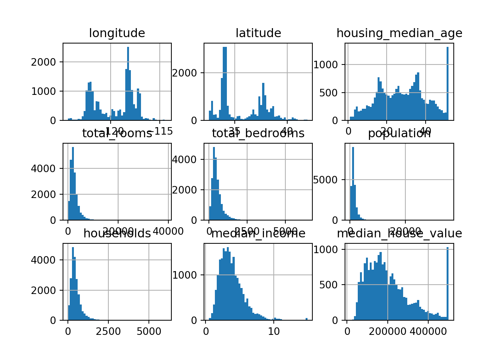

7 CH2: End to end ml project
7.1 Problem formulation & the big picture
- 這邊要問自己這幾個問題：
- 商業目標是什麼(使用商業詞彙來定義目標)？ 別人會如何使用你的解決方案？
- 目前的解決方案是什麼 (as is)？
- 如何定義成 ml 問題？ (監督/非監督; 線上/離線？)
- 如何評估 performance？ performance measure 有符合商業目標嗎？
- 實現商業目標的最低績效是什麼？ (performance measure 的過關標準)
- 有沒有類似的專案可以 benchmark？
- 有 domain expert 可以協助嗎？
- 列出你(或別人)到目前為止列過的假設，可以的話，驗證這些假設
- 商業目標是什麼(使用商業詞彙來定義目標)？ 別人會如何使用你的解決方案？
- 那這次要練習的，是想像自己是某房地產公司的資料分析師，要做一個房價預估模型。想要預測加州某個給定區域的該區房價中位數。
- 舉例來說，想要預測台北市松山區的房價中位數好了，我們就可以用該區的一堆 feature (e.g. 該區人口數、…)，來預測該區的房價中位數。
- 那在這個階段，就要回應剛剛的那堆問題：
7.2 取得資料(盡量自動化)
- 在獲取資料的過程中，盡量
自動化，這樣才可以不斷取得最新的資料
- 這邊要問自己幾個問題：
- 需要什麼資料？需要多少資料？
- 如何取得這些資料(db?)
- 將資料換成可以輕鬆管理的格式(但raw data也會留一份不動他)
- 取出 testing set，放一旁，不要偷看
- 需要什麼資料？需要多少資料？
import os
import numpy as np
import pandas as pd
import sklearn
import matplotlib as mpl
import matplotlib.pyplot as plthousing = pd.read_csv("datasets/housing/housing.csv")
housing.head()
#> longitude latitude ... median_house_value ocean_proximity
#> 0 -122.23 37.88 ... 452600.0 NEAR BAY
#> 1 -122.22 37.86 ... 358500.0 NEAR BAY
#> 2 -122.24 37.85 ... 352100.0 NEAR BAY
#> 3 -122.25 37.85 ... 341300.0 NEAR BAY
#> 4 -122.25 37.85 ... 342200.0 NEAR BAY
#>
#> [5 rows x 10 columns]housing.info()
#> <class 'pandas.core.frame.DataFrame'>
#> RangeIndex: 20640 entries, 0 to 20639
#> Data columns (total 10 columns):
#> # Column Non-Null Count Dtype
#> --- ------ -------------- -----
#> 0 longitude 20640 non-null float64
#> 1 latitude 20640 non-null float64
#> 2 housing_median_age 20640 non-null float64
#> 3 total_rooms 20640 non-null float64
#> 4 total_bedrooms 20433 non-null float64
#> 5 population 20640 non-null float64
#> 6 households 20640 non-null float64
#> 7 median_income 20640 non-null float64
#> 8 median_house_value 20640 non-null float64
#> 9 ocean_proximity 20640 non-null object
#> dtypes: float64(9), object(1)
#> memory usage: 1.6+ MBhousing.describe()
#> longitude latitude ... median_income median_house_value
#> count 20640.000000 20640.000000 ... 20640.000000 20640.000000
#> mean -119.569704 35.631861 ... 3.870671 206855.816909
#> std 2.003532 2.135952 ... 1.899822 115395.615874
#> min -124.350000 32.540000 ... 0.499900 14999.000000
#> 25% -121.800000 33.930000 ... 2.563400 119600.000000
#> 50% -118.490000 34.260000 ... 3.534800 179700.000000
#> 75% -118.010000 37.710000 ... 4.743250 264725.000000
#> max -114.310000 41.950000 ... 15.000100 500001.000000
#>
#> [8 rows x 9 columns]housing['ocean_proximity'].value_counts()
#> <1H OCEAN 9136
#> INLAND 6551
#> NEAR OCEAN 2658
#> NEAR BAY 2290
#> ISLAND 5
#> Name: ocean_proximity, dtype: int64housing.hist(bins = 50)
#> array([[<AxesSubplot:title={'center':'longitude'}>,
#> <AxesSubplot:title={'center':'latitude'}>,
#> <AxesSubplot:title={'center':'housing_median_age'}>],
#> [<AxesSubplot:title={'center':'total_rooms'}>,
#> <AxesSubplot:title={'center':'total_bedrooms'}>,
#> <AxesSubplot:title={'center':'population'}>],
#> [<AxesSubplot:title={'center':'households'}>,
#> <AxesSubplot:title={'center':'median_income'}>,
#> <AxesSubplot:title={'center':'median_house_value'}>]],
#> dtype=object)
plt.show()
7.3 EDA
- 在 EDA 過程中，試著向 domain expert 請教
- 這邊要做的事包括：
- 建立探索用的資料副本
- 用 jupyter notebook or RMarkdown，紀錄探索過程
- 研究各個變數的：
- 意義
- 類型(離散、連續、時間、文字…)
- distribution & outlier detection
- missing 百分比
- 雜訊程度與雜訊類型(隨機？離訊值？進位誤差？)
- 對任務的實用性？(一看就知道是垃圾變數？還是很有機會的變數？)
- 將資料視覺化
- 研究變數之間的關聯性
- 找出可能要採取的 transformation
- 想想還有哪些 feature 還可以再搜集
- 建立探索用的資料副本
- 在這個階段，就是不斷探索並收斂出後續要做的事，下一步就是正式進入 preprocessing 階段
7.4 資料前處理
- 在這個階段，要做的事包括：
- 資料清理
- 修復或移除 outlier
- 處理 missing data (補0, 補mean, …, 移除整列, 移除值)
- 修復或移除 outlier
- feature screening
- 移除 zero variance 變數
- 移除 和 y 關聯性超低的變數
- 移除 zero variance 變數
- feature engineering
- 類別型變數： one-hot encoding, 零碎類別整併, …
- 時間型變數： 轉成一堆時間型變數
- 連續型變數： normalize/scaling, transformation(log, square, sqrt, …), 離散化…
- 組合多個變數： 離如變數間的相乘…
- 資料清理
- 要注意的是：
- 使用資料複本 (讓原始資料組原封不動)
- 將所有要做的 data transformation，都寫成 function，因為：
- 方便之後對測試資料、新的 training data 做轉換
- 將前處理也視為 hyper-parameter ，來 tune 他
- 方便之後對測試資料、新的 training data 做轉換
- 使用資料複本 (讓原始資料組原封不動)
7.5 model screening
- 在這個階段，要做的事情包括：
- 用 default 參數先多訓練幾種 model、並用 k-fold CV 比較 performance
- 看一下各種 model 找出來的重要變數
- 分析誤差
- 收斂到 3 ~ 5 個最有希望的 model
- 用 default 參數先多訓練幾種 model、並用 k-fold CV 比較 performance
7.6 fine-tune model
- hyper-parameter tunning
- 用 cv 來調參數(前處理也算，例如用平均數 or 中位數來補遺漏值，哪個效果比較好？)
- 優先選擇隨機搜尋(而不是網格搜尋)
- 用 cv 來調參數(前處理也算，例如用平均數 or 中位數來補遺漏值，哪個效果比較好？)
- stacking
7.7 presentation
- 這個步驟，就是要和 user/主管 展示做出來的結果：
- big picture (大架構)
- 解釋為何你的 solution 可以實現商業目標
- 用漂亮的 visualization 和 好記的 slogan 來加深聽眾印象
- 整個專案進行中，哪些嘗試有效，哪些沒效 (就是些有趣的例子)
- 列出假設與限制
- big picture (大架構)
7.8 Deploy
- 將這個 solution 推到準生產狀態 (資料流開始進來、寫 unit test 等)
- 寫 monitoring 的 程式，定期檢查系統的即時性能，並在性能下降時發出警報
- 注意不知不覺的退化：模型往晃為隨著資料的演變而腐敗
- 有時需要透過人類管道來評估效果
- 也要監控資料輸入的品質(對線上學習而言特別重要)
- 注意不知不覺的退化：模型往晃為隨著資料的演變而腐敗
- 定期使用新資料來重新訓練模型 (盡量自動化)
Xie, Yihui. Bookdown: Authoring Books and Technical Documents with r Markdown, 2021. https://CRAN.R-project.org/package=bookdown.
———. Dynamic Documents with R and Knitr. 2nd ed. Boca Raton, Florida: Chapman; Hall/CRC, 2015. http://yihui.org/knitr/.